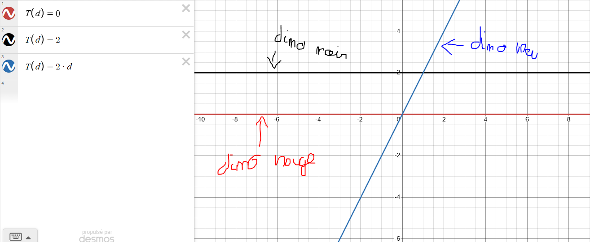
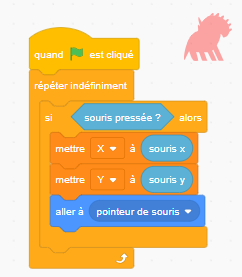
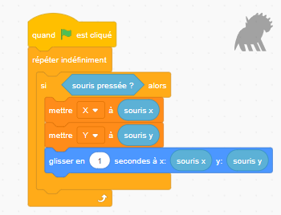

Introduction...
1- Distance en temps, tout est une question de proportions
Si on regarde attentivement les trois dinosaures sur la vidéo, on remarque que seul le jaune semble se déplacer à vitesse constante. Cela implique donc que le temps qu'il met pour atteidre la position voulue est proportionnelle à la distance qu'il parcourt.

Pour le dinosaure rouge, le temps mis pour aller d'un point à un autre est toujours nul. On peut donc en déduire que son équation est T(d)=0. Le dinosaure noir met toujours deux secondes pour aller d'un point a à un point b, son équation est donc T(d)=0. Le temps mis par ces deux dinosaures n'est pas proportionnel à la distance à parcourir. Δd/ Δt n'est pas constant car on a un terme variabe divisé par un terme constant. Enfin, le dinosaure bleu met un temps différent en fonction de la distance à parcourir.
En scratch, voici à quoi ressemble le code du déplacement des dinos:


Je voulais que mon dino mette un maximum de 3 secondes pour une distance. La distance maximale possible en deux point est une diagonale. Le sommet en haut à gauche a pour coordonnées Sg (-213; 160) et le sommet en bas à droite Sd (215; -157). La distance totale est donc de ((215-213)^2+(160-157)^2)^1/2 (simple théorème de pythagore appliqué pour un triangle ayant un côté de |xa-xb|unités et un autre de |ya-yb| unités. J'avais donc une distance de 13^1/2 soit environs 3.6 unités pour un temps de 3 secondes. Il me suffisait ensuite de trouver l'entier a pour lequel a*dmax=tmax soit 3.6a=3 donc a=3/3.6 soit environs 0.8. Δt est donc égal à 0.8Δd